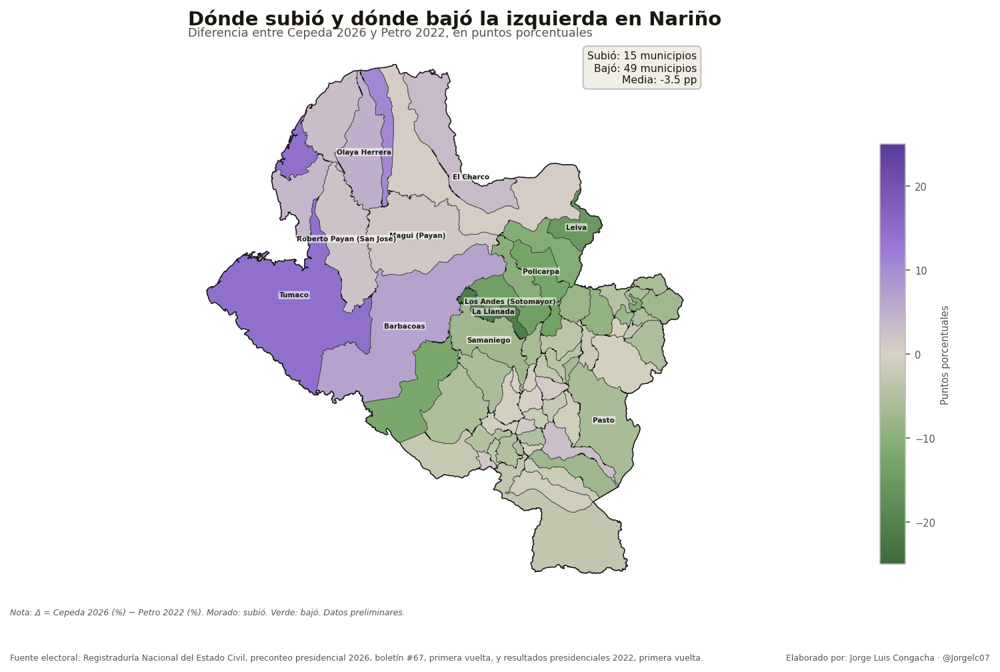
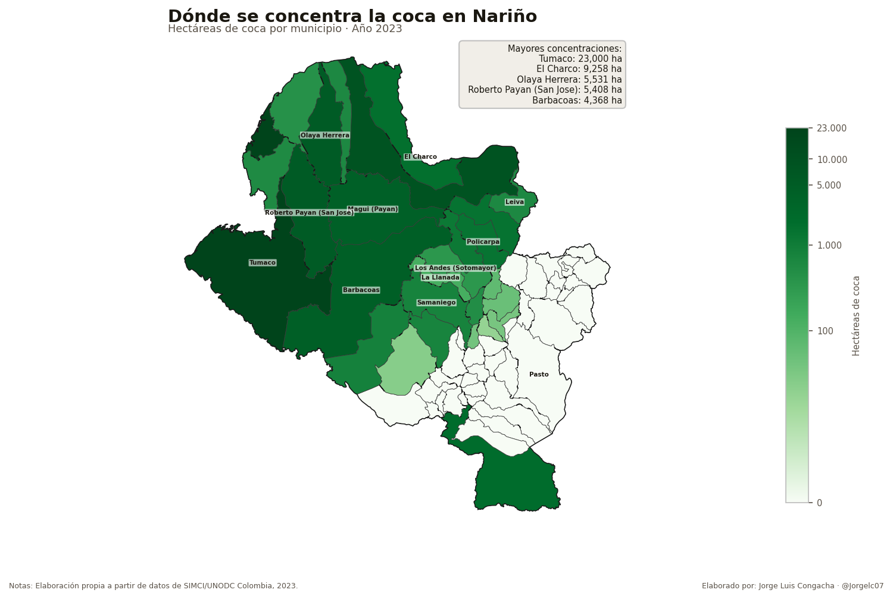
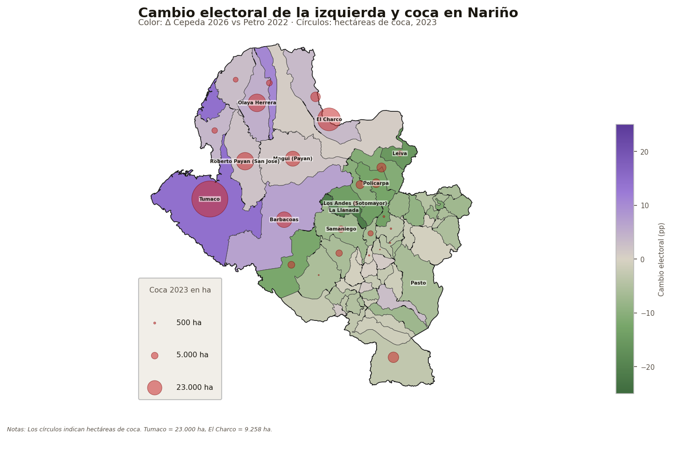
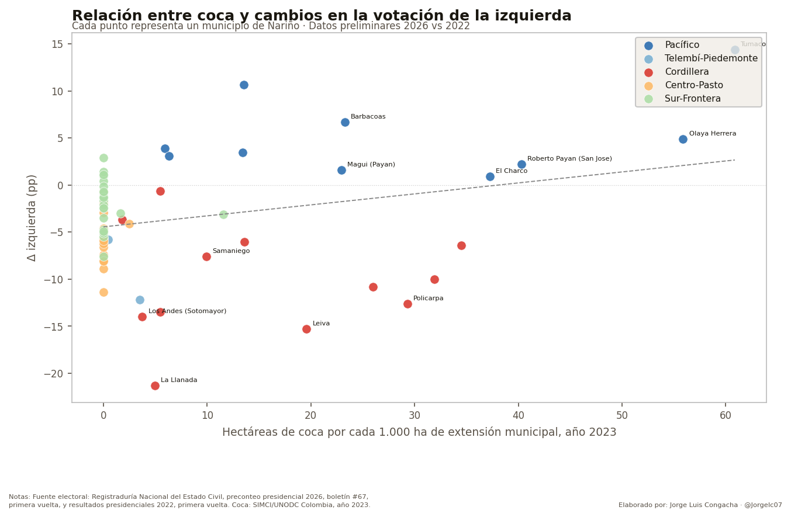
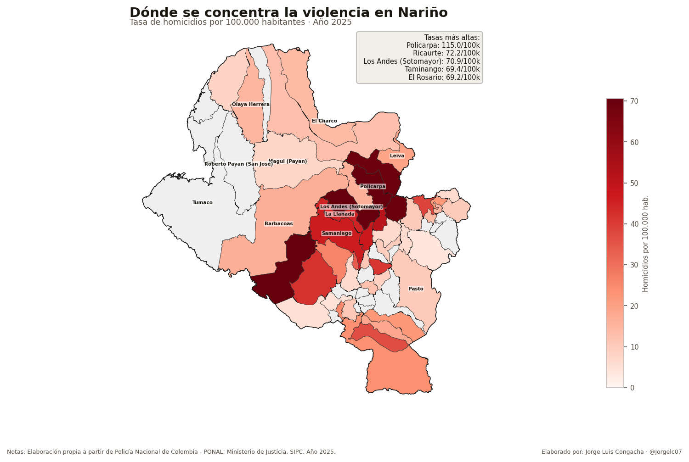
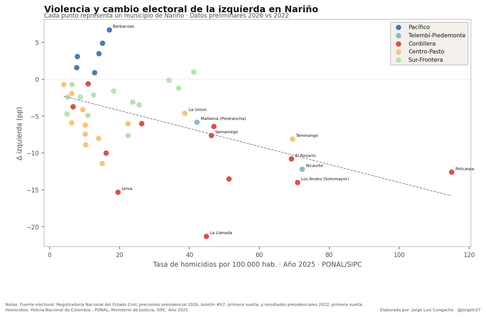
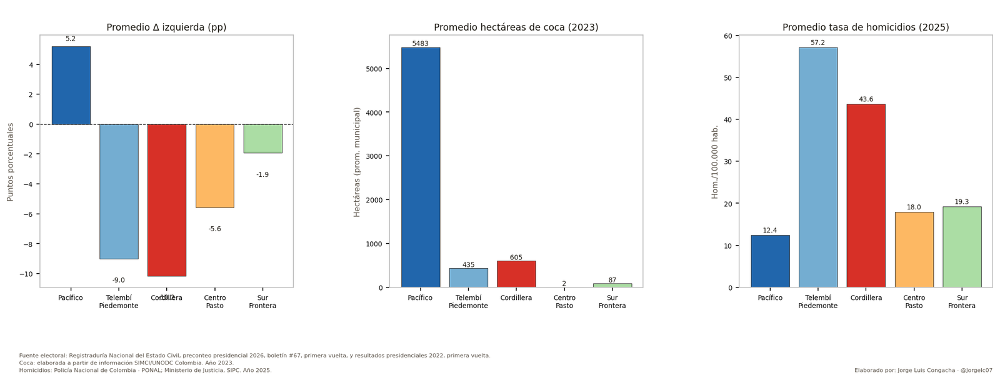
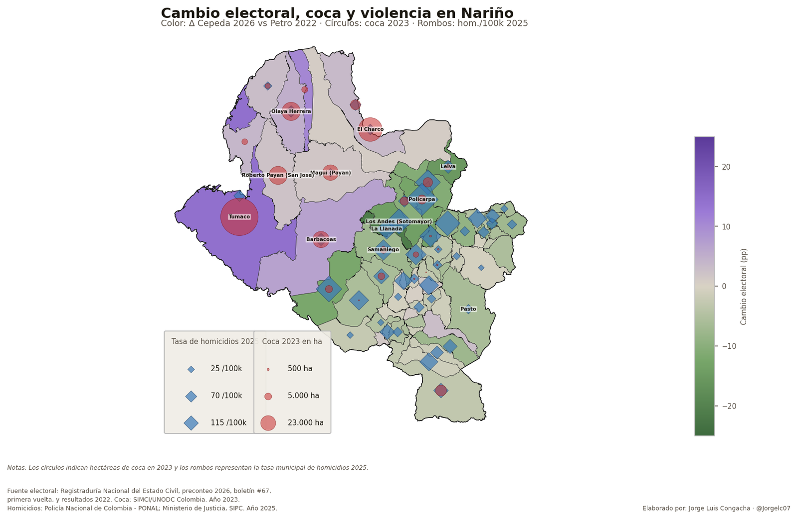

Elecciones, coca y violencia: mapa electoral de Nariño
Cepeda ganó en 62 de los 64 municipios de Nariño, pero obtuvo un porcentaje menor que Petro en 49 de ellos. La izquierda creció donde la coca tiene más peso territorial y retrocedió donde la violencia aparece con más fuerza.
Por Jorge Luis Congacha
Luego de la primera vuelta presidencial de 2026, en la que Iván Cepeda se impuso en 62 de los 64 municipios de Nariño y obtuvo cerca del 68,6 % de los votos válidos en el departamento, vale la pena mirar el resultado con más detalle territorial. No solo interesa saber quién ganó, sino cómo votaron distintas zonas del departamento y qué diferencias aparecen cuando se compara esta elección con la primera vuelta presidencial de 2022, en la que Gustavo Petro también tuvo una votación mayoritaria en Nariño.
Esa comparación permite hacer un ejercicio útil: observar dónde la izquierda aumentó su votación relativa y dónde perdió fuerza frente a 2022. Además, al cruzar ese cambio electoral con algunos elementos del contexto territorial, como la presencia de cultivos de coca y la tasa de homicidios, es posible identificar patrones que ayudan a formular preguntas sobre el comportamiento electoral del departamento. Estos cruces no buscan demostrar relaciones causales ni afirmar que una variable explique por sí sola el voto. Más bien, permiten proponer algunas hipótesis sobre tendencias territoriales que pueden ser relevantes de cara a la segunda vuelta presidencial.
En ese sentido, aunque la izquierda ganó con amplitud en Nariño, el resultado deja un dato llamativo: Cepeda obtuvo un porcentaje menor que Petro en 49 municipios y solo mejoró frente a 2022 en 15. En promedio, la izquierda cayó alrededor de 3,5 puntos porcentuales en el departamento. La pregunta, entonces, no es si Cepeda ganó en Nariño, porque ganó claramente, sino por qué el resultado fue más favorable en unas zonas y menos intenso en otras.

El primer mapa muestra esa diferencia con claridad. El morado identifica los municipios donde Cepeda mejoró frente al porcentaje obtenido por Petro en 2022; el verde, aquellos donde la izquierda retrocedió. La subida se concentra principalmente en el Pacífico nariñense, mientras que las caídas más fuertes aparecen en buena parte de la cordillera y del interior andino. Esta división territorial sugiere que el voto en Nariño no se comportó como un bloque homogéneo, sino que respondió a dinámicas distintas según la subregión.
Presencia de coca
Nariño es un departamento con presencia de cultivos de coca, pero estos no están distribuidos de manera uniforme en el territorio. El mapa de 2023 muestra una concentración muy fuerte en el Pacífico nariñense, especialmente en Tumaco, El Charco, Olaya Herrera, Roberto Payán, Magüí Payán y Barbacoas. Tumaco, por sí solo, registra cerca de 23.000 hectáreas de coca; El Charco supera las 9.000. Esta concentración permite entender por qué el Pacífico tiene un peso particular en cualquier discusión sobre política antidrogas, economías ilegales y alternativas productivas.

Sin embargo, la coca no aparece únicamente en el litoral. También hay presencia de cultivos en municipios de la cordillera y del piedemonte. Este punto es importante porque evita una lectura simplista: no se trata de decir que donde hay coca la izquierda aumenta automáticamente o que los municipios cocaleros votan todos igual. De hecho, los mapas muestran algo más interesante: tanto el Pacífico como la cordillera tienen presencia de coca, pero el comportamiento electoral fue distinto.
En el Pacífico, donde la coca tiene mayor peso territorial, la izquierda aumentó su votación frente a 2022. Tumaco subió 14,4 puntos porcentuales; Barbacoas, 6,7; Olaya Herrera, 4,9; Roberto Payán, 3,5. En conjunto, el Pacífico fue la única subregión donde la izquierda creció en promedio, con cerca de +5,2 puntos porcentuales. En contraste, en la cordillera, donde también hay coca aunque en menor magnitud promedio, la izquierda cayó con fuerza.

Una posible hipótesis es que, en territorios donde la coca tiene un peso mayor en la economía local, las propuestas de fumigación, erradicación forzada o mano dura contra los cultivos ilícitos pueden generar resistencias electorales. Para muchas comunidades, la coca no es solamente un cultivo ilegal; también puede estar asociada al ingreso familiar, al trabajo rural, al comercio local y a formas de subsistencia en zonas donde las alternativas productivas han sido históricamente limitadas.
Esto no significa que la coca explique por sí sola el aumento de la izquierda en el Pacífico. Los datos no permiten afirmar eso. Lo que sí muestran es una coincidencia territorial que vale la pena observar: en varios municipios donde la coca tiene mayor presencia, la votación de Cepeda no se debilitó frente a Petro 2022, sino que aumentó. Esa coincidencia abre una pregunta política importante: hasta qué punto las comunidades ubicadas en economías cocaleras pueden estar evaluando a los candidatos según el riesgo que perciben frente a su fuente de ingresos, especialmente cuando se habla de fumigación o erradicación.

El gráfico de coca relativa —hectáreas de coca por cada 1.000 hectáreas de extensión municipal— permite comparar mejor la intensidad del cultivo dentro de cada territorio. Esta medida es útil porque no solo muestra qué municipio tiene más hectáreas en términos absolutos, sino qué tan importante es la coca frente al tamaño del municipio. Allí, varios municipios del Pacífico aparecen con mayor presencia relativa de coca y, al mismo tiempo, con aumentos en la votación de la izquierda frente a 2022. No obstante, también aparecen municipios con coca donde la izquierda cayó, lo que confirma que la coca no cuenta una sola historia electoral.
Violencia y cambio electoral
La otra variable que ayuda a leer el mapa es la violencia. En la zona andina interior de Nariño, especialmente en municipios de la cordillera y zonas cercanas, las tasas de homicidio son más altas que en buena parte del Pacífico. Municipios como Policarpa, Los Andes-Sotomayor, Samaniego, Leiva, El Rosario, Ricaurte y Taminango aparecen entre los territorios con mayores niveles de homicidio en 2025.

Justamente en esa zona se observan algunas de las caídas más fuertes de la izquierda frente a 2022. La Llanada cayó 21,3 puntos porcentuales; Leiva, 15,3; Los Andes-Sotomayor, 14,0; Policarpa, 12,6; Samaniego también muestra una reducción importante. En promedio, la Cordillera cayó alrededor de 10,2 puntos porcentuales, la mayor caída entre las subregiones analizadas.
Este punto debe leerse con cuidado. No significa que esos municipios hayan votado mayoritariamente por Abelardo de la Espriella ni que la derecha haya desplazado completamente a la izquierda. En varios de ellos la izquierda siguió siendo competitiva o incluso ganó. Lo relevante es otra cosa: en comparación con Petro 2022, el proyecto de izquierda perdió intensidad. Es decir, no necesariamente cambió el ganador, pero sí cambió la fuerza relativa con la que la izquierda llegó a esos territorios.
En territorios con mayores tasas de homicidio, las preocupaciones electorales pueden estar atravesadas por preguntas distintas. Cuando la violencia es más cercana, más frecuente o más visible, el voto puede estar influido por la percepción de seguridad, el control territorial, el miedo, el cansancio frente a actores armados o la sensación de abandono institucional. En esos contextos, la economía asociada a la coca puede seguir siendo importante, pero tal vez no sea la única prioridad. La vida cotidiana, la seguridad y la posibilidad de vivir sin amenazas pueden pesar más que otros factores.

El gráfico entre violencia y cambio electoral muestra una relación negativa: los municipios con mayores tasas de homicidio tienden a registrar mayores caídas de la izquierda frente a 2022. Esto no prueba que la violencia haya causado esa caída. Puede haber otros factores detrás, como presencia de actores armados, presión territorial, abstención diferencial, desplazamiento, miedo, desgaste institucional o cambios en liderazgos locales. Pero la coincidencia es suficientemente clara como para no ignorarla.
En otras palabras, el contraste no es simplemente entre municipios con coca y municipios sin coca. La diferencia parece estar en cómo se combinan la coca, la violencia y las condiciones políticas de cada subregión. En el Pacífico, la coca aparece con mayor peso territorial y la izquierda crece. En la cordillera, donde también hay coca pero las tasas de homicidio son más altas, la izquierda retrocede.
Lectura por subregiones
Al analizar por subregiones se observan dinámicas diferentes. El Pacífico combina el mayor promedio de hectáreas de coca por municipio con el único aumento promedio de la izquierda. La Cordillera, en cambio, tiene menos coca promedio que el Pacífico, pero registra una caída más fuerte del voto de izquierda y tasas altas de homicidio. Telembí-Piedemonte también muestra una caída importante y una tasa promedio de homicidios elevada.

Esta comparación ayuda a ordenar la discusión. El Pacífico y la cordillera pueden compartir presencia de coca, pero no viven la misma combinación de factores. En el Pacífico, donde la economía cocalera parece tener un peso territorial mayor, la votación de la izquierda aumentó frente a 2022. En la cordillera y zonas cercanas, donde la violencia aparece con más fuerza, la izquierda perdió terreno. Por eso, más que hablar de una relación directa entre coca y voto, conviene hablar de configuraciones territoriales distintas.
Esto sugiere que las preferencias electorales no se explican únicamente por ideología o por identidad partidista. También pueden estar conectadas con las condiciones concretas de cada territorio. En algunos municipios, la preocupación puede estar más asociada a la subsistencia económica y al temor frente a políticas agresivas de erradicación. En otros, puede pesar más la seguridad, la protección de la vida, la recuperación del control institucional o el desgaste frente a promesas incumplidas.

El mapa combinado resume esa tensión. En el Pacífico aparecen grandes círculos rojos, que representan la presencia de coca, sobre municipios donde la izquierda subió. En la zona andina y de cordillera, aparecen rombos azules más grandes, que muestran mayores tasas de homicidio, sobre municipios donde la izquierda cayó. Tumaco es un caso ilustrativo: tiene el mayor volumen de coca, pero una tasa de homicidios menor que varios municipios de la cordillera. Policarpa y Los Andes-Sotomayor muestran el patrón contrario: menos coca que el Pacífico, pero tasas de homicidio mucho más altas y una caída marcada de la izquierda.
El punto no es afirmar que la coca sube votos o que la violencia los baja. El punto es que Nariño no votó como un bloque homogéneo. El Pacífico y la Cordillera expresan preocupaciones distintas. En un lado, la discusión puede estar más atravesada por la subsistencia, las economías locales y el temor a políticas de fumigación o erradicación. En el otro, puede pesar más el deterioro de la seguridad y la percepción de que el proyecto político de la izquierda no ha respondido suficientemente a esa realidad.
Estos mapas no cierran la discusión. La abren. Cepeda ganó ampliamente en Nariño, pero no ganó igual en todas partes. La izquierda se fortaleció donde la coca tiene mayor peso territorial y se debilitó donde la violencia aparece con más fuerza. Esa diferencia no permite afirmar causalidad, pero sí muestra que el territorio importa y que las campañas no deberían leer al departamento como si fuera una unidad homogénea.
De cara a la segunda vuelta, esa lectura territorial puede ser clave. El Pacífico, la Cordillera, Telembí-Piedemonte, Pasto y la zona de frontera tienen problemas distintos, miedos distintos y expectativas distintas. Y el voto, como muestran estos mapas, también podría estar respondiendo a esas diferencias.
En Nariño, más que en muchos otros departamentos, el mapa electoral no se entiende sin el territorio.
Una versión de este artículo se publicó originalmente en Página10.com el 9 de junio de 2026.
Fuentes de los datos
- Registraduría Nacional del Estado Civil. Preconteo presidencial 2026, boletín #67, primera vuelta, y resultados presidenciales 2022, primera vuelta.
- SIMCI/UNODC Colombia. Hectáreas de coca por municipio, año 2023.
- Policía Nacional de Colombia (PONAL) y Ministerio de Justicia, SIPC. Homicidios municipales, año 2025.
- DANE. Proyecciones de población 2025, usadas como denominador de las tasas de homicidio.